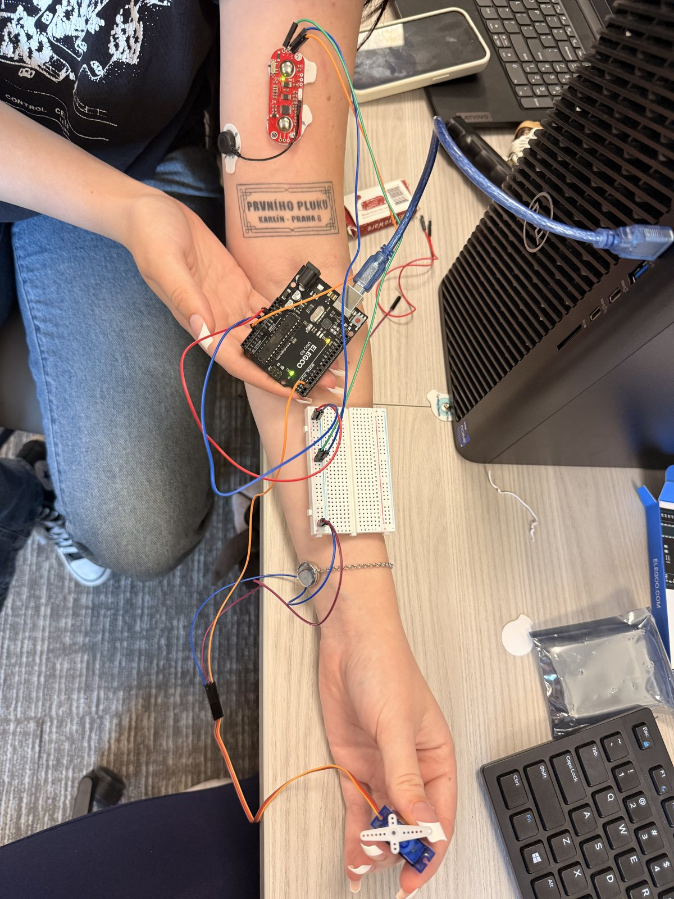

Project Overview
This project demonstrated a complete sensor-to-actuator pathway. Surface electrodes and a MyoWare sensor detected muscle contraction, an Uno-compatible microcontroller interpreted the signal, and a micro servo produced a visible mechanical response.

Signal-to-Motion Path
DetectSurface electrodes capture muscle activity through the MyoWare sensor.
InterfaceThe microcontroller reads the sensor signal and applies the control logic.
ActuateThe servo moves in response to contraction, creating a visible output.
VerifyRepeated contractions confirm the response across the integrated signal path.
Integration Work
The project required more than reading a sensor. Electrode contact, wiring, signal stability, power, and servo behavior all had to work together. Testing the complete setup reinforced the importance of checking each interface before evaluating overall system performance.
- Positioned surface electrodes and connected the MyoWare sensor.
- Integrated analog sensor input with microcontroller logic.
- Wired and tested a micro servo as the physical output.
- Troubleshot the full pathway from contraction to actuator response.
Skills Demonstrated
- Physiological sensor interfacing and electrode setup.
- Arduino-compatible microcontroller wiring and programming.
- Hardware-software integration and bench troubleshooting.
- Translating a biological signal into a controlled mechanical action.